Rymdattack
Det här spelet bygger på ett klassiskt spel från 1978 som heter Space Invaders. I vår version styr du en rymdraket som ska skjuta mot attackerande robotar. Du kommer att få lära dig att skapa kloner och att använda slumptal och variabler.
Här kan du se en version av spelet: https://scratch.mit.edu/projects/118440149/
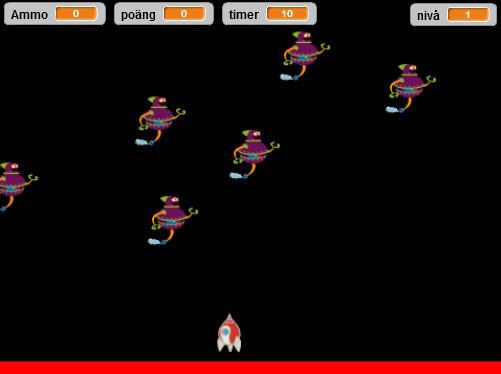
1: Bakgrund och sprajtar
Börja med att skapa en bakgrund som ser ut som rymden. Längst ned ska du göra en röd linje som rymdraketen ska sväva över, den linjen kommer att bli viktig senare i den här uppgiften!
Skapa ett nytt Scratch-projekt och ta bort katten. Rita en ny bakgrund och fyll den med svart färg. Om du vill kan du rita dit små stjärnor också.
Använd rektangelverktyget och skapa en röd, fylld, rektangel på botten av scenen. Den ska inte vara för tjock men den ska täcka hela botten.
Lägg till sprajten Fantasy/Spaceship från biblioteket. Den är stor, så du behöver förminska den med förminskningsverktyget cirka 16 gånger. Placera sprajten precis ovanför den röda linjen.
Nu behöver du ett gäng med elaka robotar! Men du börjar med att bara en. Lägg till sprajten Fantasy/Robot1 från biblioteket. Förminska den så att den är ungefär lika stor som rymdraketen.
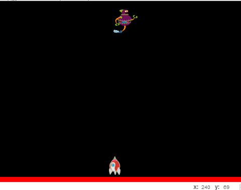
2: Styra och skjuta
Meningen med spelet är att styra rymdraketen åt vänster och höger för att skjuta ner de attackerande robotarna. Först behöver du skapa ett skript för att styra raketen.
Ändra raketens rotationsstil så att den bara kan röra sig åt vänster-höger.
Skapa ett skript som säger:
Testa ditt projekt! Klicka på START. Kan du röra raketen åt vänster och höger? Studsar den vid kanten?
Nu ska du göra så att raketen kan skjuta. För att göra det måste du först ändra raketens mittpunkt till dess topp.
Klicka på raketen och sedan på fliken Klädslar. Högst upp till höger hittar du Sätt klädselns centrum. Sätt centrum till raketens spets, zooma in så kan du trycka på den enklare!
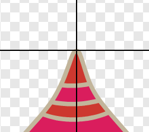
Nu behöver du själva skottet som raketen kommer att skjuta. För att göra det måste du skapa en ny sprajt.
Rita en ny sprajt genom att zooma in så mycket så att du ser alla rutor (pixlar). Gör en gul ifylld rektangel som täcker mittpunkten. Den ska vara 6 rutor lång och 2 rutor bred.
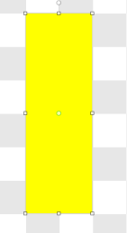
Nu behöver du skapa ett skript för skottet som gör att det:
Avfyras när du trycker på mellanslag
Försvinner när den rör kanten
Bara kan avfyras 3 skott åt gången på scenen, för annars kan du fylla hela scenen med skott!
För att få flera skott samtidigt kommer vi använda oss av KLONER. Det är som kopior av sprajten som skapas av ditt skript och bara finns så länge det skriptet går.
Börja med att skapa en variabel som heter "Ammo", den ska vara synlig på scenen.
Skapa ett skript till skottet som säger:
Skapa ännu ett skript till skottet som:
Starta när du trycker ner mellanslag
Kolla om "Ammo" < 4
Då ska den ändra "Ammo" med 1
och skapa en klon av sig själv
Nu har du gjort ett skript som styr hur många skott du kan ha på scenen samtidigt, den klonar sig själv tills det finns tre skott. Nu behöver du ett skript som gör att skottet startar från raketen och att det upptäcker KOLLISION, det vill säga om den krockar, med kanten!
Skapa ett till skript för skottet som säger:
Starta när sprajten startas som en klon
Gå till x- och y-position för Spaceship
Visa dig
REPTERA: ändra y med 10 tills rör kanten
Då ska den ändra "Ammo" med -1
Och radera klonen
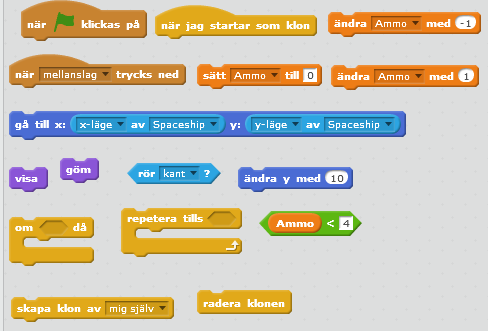
Testa ditt projekt! Klicka på START. Skjuter du skott när du klickar på mellanslag? Skjuter du från raketen? Kan du bara skjuta tre skott?
Tips: Om skotten rör sig för långsamt eller snabbt, ändra hur mycket y ändras. Testa dig fram!
3: Attackerande robot
Nu har du gjort en raket som kan röra på sig och skjuta, nu behöver du få robotar att visa sig överst på scenen och dyka nedåt. Om robotarna nuddar raketen eller den röda linjen, då ska spelet avslutas. Men om raketen lyckas skjuta ner dem innan, då ska robotarna förstöras och du ska få en poäng för varje robot. Det ska också finnas en timer som stoppar allt när den når 0, så att spelet avslutas!
För att skapa flera robotar kommer du att säga åt sprajten att KLONA sig själv. Då gör den en kopia av sig själv, så att du själv inte behöver skapa flera sprajter med samma skript.
Skapa två nya VARIABLER, en som heter poäng och en som heter timer. De ska båda visas på scenen.
Nu finns det väldigt många VARIABLER som visas på scenen! Dra och lägg dem på rad längst upp på scenen, så att de inte täcker hela vänstra sidan.
Du behöver ett skript för sprajten Robot1 som skapar en klon av sig själv varje sekund tills timern har blivit 0, då spelet avslutas. Skapa ett nytt skript som säger:
Starta när START klickas på
Göm dig
Sätt poäng till 0
Sätt timer till 16
För alltid:
Kolla om timer > 0
Då ska den skapa en klon av sig själv
Ändra timer med -1
Vänta 1 sekunder
Annars ska den stoppa alla skript
Nu behöver du ett skript som kontrollerar vad varje klon gör! Skapa ett skript som säger:
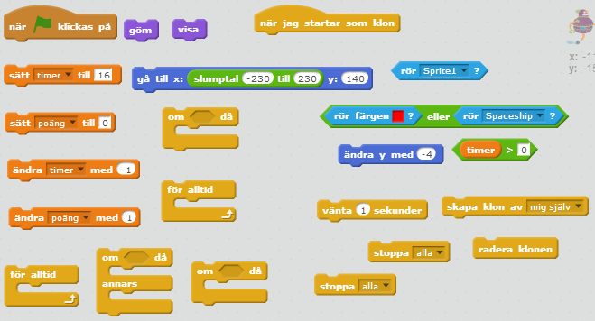
Testa ditt projekt! Klicka på START. Rör sig robotarna nedåt från toppen av scenen mot botten? Förvinner de när de blir träffade av ett skott? Stoppas alla skript när en av robotarna nuddar botten eller raketen?
4: Game Over
Nu när spelet tar slut stängs hela skriptet och du får inte veta hur många poäng du fått. Det ska vi ändra på! Du ska låta roboten skicka ett meddelande när spelet avslutas, så att den kan tala om hur många poäng du fått.
När Robot1 (någon av klonerna) rör färgen röd eller Spaceship så ska den skicka ut ett meddelande innan den stoppar alla skript. Meddelandet kan du kalla för "Game over".
Nu skapar du ett skript för sprajten Spaceship som säger:

Nu har du ett skript som gäller för om du förlorar – i nästa steg får du göra en helt annan sak för när du vinner spelet!
5: Flera nivåer för spelet
Om tiden tar slut avslutas spelet, men nu ska du få göra så att du istället går till en ny nivå, där robotarna ändrar färg och blir snabbare. Det blir alltså svårare att spela! Det här kan du göra genom att lägga till nya VARIABLER.
Skapa två stycken nya variabler som heter hastighet och nivå. Hastighet ska inte visas på scenen, men nivå ska visas.
Gå till robotens SKRIPT-flik och ändra skriptet för timern som du gjorde i 3:
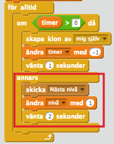
Den röda rektangeln markerar den nya koden
I samma skript lägger du till två block som:
Sätter nivå till 1
Sätter hastighet till -1
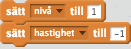
Båda av dessa block ska fästas efter sprajten har gömts, men innan för alltid-loopen.
Byt ut ändra y med -4 till ändra y med hastighet i det andra skriptet, det som du gjorde i steg 18.
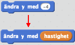
Nu gör du ett skript som tar emot meddelandet för att byta nivå och försvåra spelet.
Gå till raketens SKRIPT-flik och skapa ett nytt skript som säger:
Starta när den tar emot meddelande "Nästa nivå"
Kolla om nivå = 4
ANNARS:
Ändra sedan färg effekten med 50
Ändra sedan hastigheten med -2
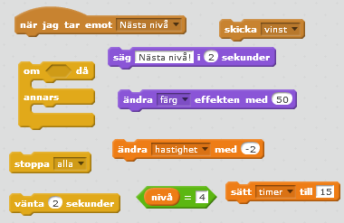
Om du förstår skriptet så ser du att den gör ändringarna för varje nivå, så att det kan bli svårare och svårare. Nu ändrar den hastigheten och färgeffekten medan den lägger till mer tid.
Skapa sedan ett nytt skript som säger:
- Starta när den tar emot meddelandet vinst
- Säg "Du vann! Du fick poäng!"
Tips: Titta på uppgift 4 om du har glömt hur du gjorde!
Testa ditt projekt! Klicka på START. Kan du komma på fler ändringar som du vill göra för nästa nivå? Storlek kanske? Om spelet är för enkelt, vad ska du ändra för att göra det svårare?
6: Bakgrund när spelet är vunnet
Du kan även lägga till skript som ändrar bakgrund för att göra ett snyggt slut för spelet!
Gå till SCEN och kopiera klädseln som du har ritat i början av uppgiften.
Rita något som du vill att vinnaren ska se när du har vunnit spelet.
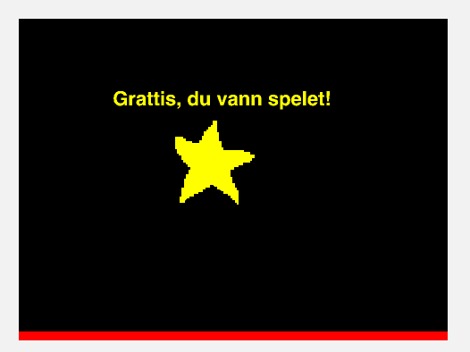
Gör nu två skript till scenen som säger:
Och det andra skriptet:
Tips: Du kan se vad bakgrunderna heter om du klicka på fliken Bakgrunder!
Färdig!
Grattis, nu har du gjort klart uppgiften.
Glöm inte att spara ditt projekt! Döp det gärna till uppgiftens namn så att du enkelt kan hitta den igen.
Testa ditt projekt
Visa gärna någon det som du har gjort och låt dem testa. Tryck på DELA för att andra ska kunna hitta spelet på Scratch. Gå ut till projektsidan och låt någon annan testa spelet!
Frågeställningar
Varför kan det vara bra att ändra en sprajts mittpunkt?
Vad är en variabel?
Vad är en klon?
Varför kan det vara bra att skapa kloner i stället för att bara kopiera en sprajt flera gånger?
Vad kan du använda ett meddelande till?